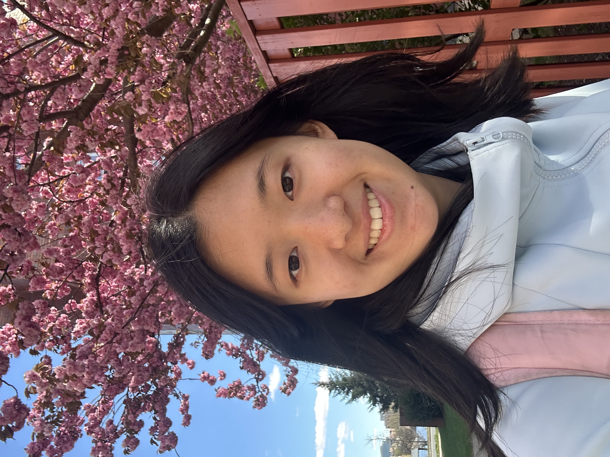

Hi! I'm
Sophia Zhang

About
I'm an undergrad at MIT studying CS and Math. I work across AI research and am passionate about AI4Math, AI4Health, and agents!
Outside of academics, I enjoy figure skating and traveling.
Education
-
B.S. in Computer Science & Math
Massachusetts Institute of Technology · Cambridge, MA
Intended graduation May 2028. Selected Coursework: Inference & Information (G), Probability (G), Machine Learning (G), Computational Structures.
Experience
-
AI Engineering Intern
Alpha School · Austin, TX
AI in education: app dev, model training/evals, and leveraging agents.
-
Undergraduate Researcher (UROP)
Dina Katabi's Lab, MIT CSAIL · Cambridge, MA
Working with multimodal data, primarily EEG and breathing signals.
-
Trading & Technology Intern
Hudson River Trading · New York City, NY
Software engineering and quant research; traded Brazilian equities.
-
Research Collaborator — LLMs for Formal Theorem Proving
Microsoft Research Asia · Remote
Lean proof verification and system improvements; two papers below.
Publications
Awards
- 2026Putnam Top 200
- 2023, 2024Mathematical Olympiad Program (MOP) — Two-time Attendee
Contact
I'm always happy to chat! Reach me at zsophia [at] mit [dot] edu, or through any of these.